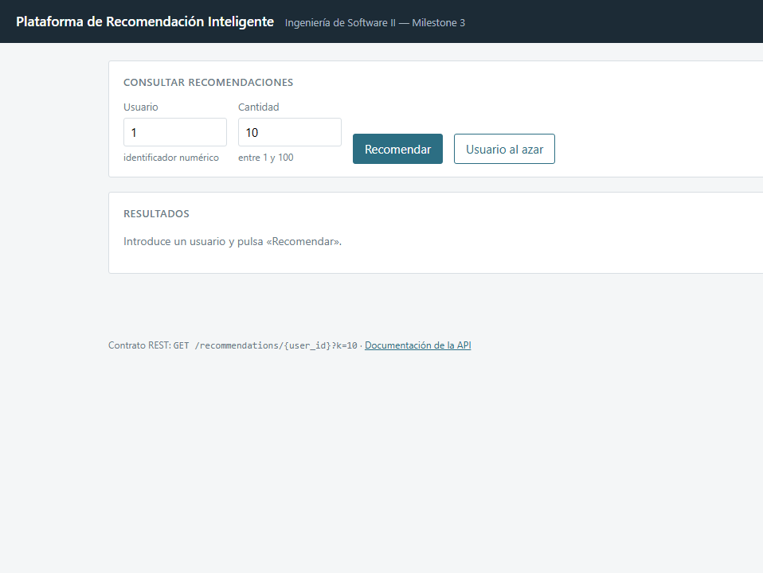
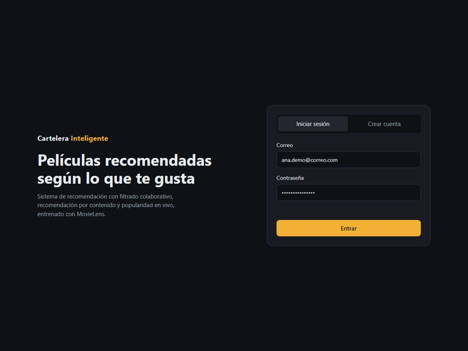
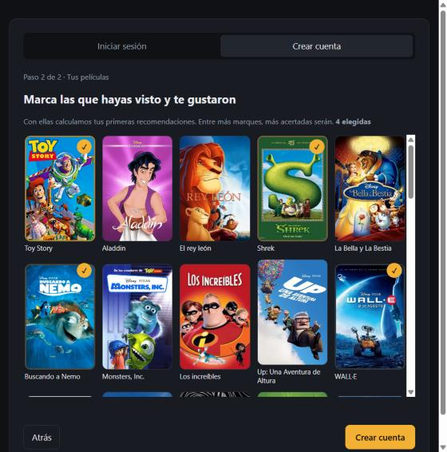
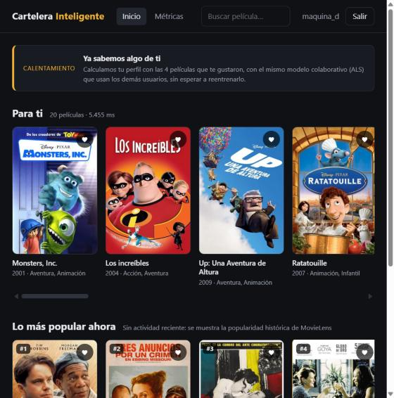
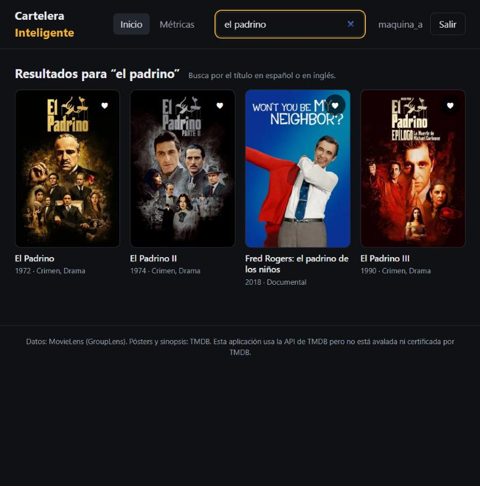
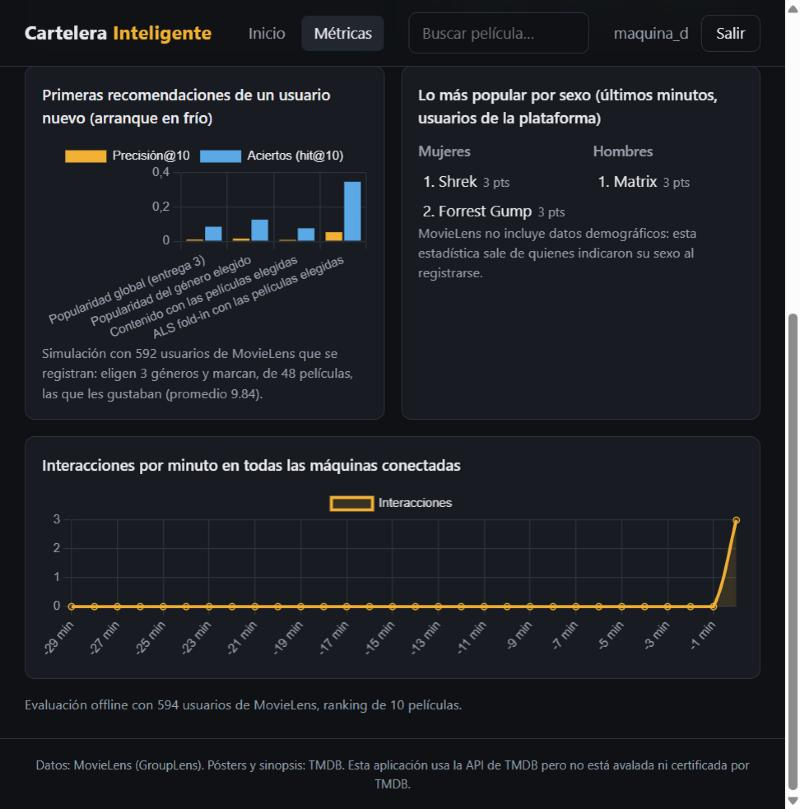
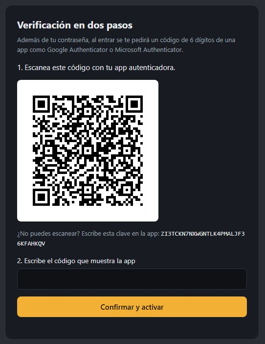

Qué se construyó sobre la arquitectura del Milestone 3, cómo se midió y en qué archivos está cada cambio.
Ingenieria de Software II\Entrega Final\Plataforma de Recomendacion
La entrega 3 dejó un backend completo (arquitectura en capas, cuatro estrategias de recomendación, Feature Store, cola de eventos, CI con 292 pruebas) y una página mínima para consultar recomendaciones con un número de usuario. La entrega final construye sobre ese núcleo la aplicación que usaría una persona: cuentas con seguridad (correo único y verificación en dos pasos), registro que evita el arranque en frío, carteles y fichas en español, buscador, tendencias en vivo entre varias máquinas y una vista de métricas.
No se reescribió el núcleo: lo nuevo se conecta por las mismas interfaces, y la prueba automática de la regla de importación entre capas sigue pasando.
| Petición | Solución |
|---|---|
| Presentación para autenticar | Pantalla de inicio de sesión y registro; sesión con token JWT que expira. |
| Medidas de seguridad | Contraseñas con hash scrypt, bloqueo por intentos fallidos, autorización por usuario, encabezados de seguridad (sección 7). |
| Pantalla que se vea bien, mejorar interfaz | Interfaz nueva en español: portada destacada, carteles de TMDB, filas "Para ti", "Porque te gustó…" y por género, ficha con sinopsis y explicación, "me gusta" que se puede quitar, diseño adaptable a celular. |
| La consulta | Recomendaciones del usuario de la sesión, buscador de películas por título en español o inglés. |
| Gráficas de las métricas | Vista de métricas: calidad por estrategia, aciertos por historial, arranque en frío, popularidad por sexo, interacciones por minuto. |
| Usuario de arranque en frío que parte de cero | Registro en dos pasos y fold-in de ALS; fases visibles: arranque en frío → calentamiento → personalizado (sección 4). |
| Top del momento por popularidad | "Lo más popular ahora": ventana deslizante de 30 minutos con las interacciones de todos los usuarios conectados. |
| Películas más populares entre hombres y mujeres | Top por sexo con los usuarios de la plataforma; MovieLens no trae ese dato (sección 5). |
| Registro más completo, resultados iniciales más precisos | Datos, sexo opcional, 1 a 3 géneros y películas vistas; precisión inicial medida offline (sección 4). |
| 2 o 3 máquinas al mismo tiempo | Un servidor en la red local; las demás máquinas solo abren el navegador. También se puede abrir desde fuera con un túnel gratuito (sección 6). |
| Correo en el registro y verificación en dos pasos (sugerencia del equipo) | Correo único por cuenta; verificación en dos pasos opcional con TOTP, QR y códigos de respaldo (sección 7). |






Se respetó la arquitectura en capas de la entrega 3. En verde, los módulos nuevos; el resto son cambios pequeños a módulos existentes.
index.html rehecho, con el diálogo de Seguridad; nuevos esquemas en schemas.py (registro, sesión, tendencias, campos en español).api.py; fases del usuario en recommendation_controller.py; observadores en la ingesta.collaborative_filtering_strategy.py; interfaz IEstrategiaConPerfil; llave de caché corregida.cuentas (con correo único y datos de TOTP, y migración automática de bases viejas), sql_repositorio_cuentas.py e interfaz IRepositorioCuentas; listar_titulos en el catálogo.IEstrategiaConPerfil extiende la interfaz de estrategia solo para las que saben armar un perfil en vivo.api.py; el comando de cuenta demo se declaró como segunda raíz en la prueba de arquitectura.ALS necesita el historial de un usuario para calcularle su vector latente. En la entrega 3, un usuario sin historial recibía la popularidad global, igual para todos.
Paso 1: usuario, correo, contraseña, sexo (opcional) y de 1 a 3 géneros. Paso 2: se muestran las 16 películas más vistas de cada género y el usuario marca las que vio y le gustaron. Las elegidas se guardan en su perfil, así que sirven desde la primera petición.
Con esas películas se calcula el vector del usuario con el mismo paso de mínimos cuadrados que ALS hace para cada usuario al entrenar, dejando fijos los factores de las películas:
Yₛ: factores de las películas elegidas · c = 4.5: confianza de un "me gusta" (al entrenar la confianza es la calificación) · λ: regularización del modelo · YᵀY se calcula una vez al arrancar. Es resolver un sistema de 64×64, sin reentrenar.
Script nuevo benchmarks/evaluar_arranque_en_frio.py, sobre la misma división temporal de la entrega 3. Cada uno de los 592 usuarios evaluables se trata como si se registrara: elige sus 3 géneros más frecuentes y marca, de las 48 películas que le mostraría el registro, las que calificó bien antes del corte. Con eso se le recomiendan 10 y se comparan con lo que calificó bien después. No hay fuga de datos.
| Estrategia para un usuario nuevo | precision@10 | recall@10 | NDCG@10 | hit@10 |
|---|---|---|---|---|
| Popularidad global (entrega 3) | 0.0100 | 0.0071 | 0.0194 | 8.5 % |
| Popularidad del género elegido | 0.0159 | 0.0120 | 0.0193 | 12.7 % |
| Contenido con las elegidas | 0.0078 | 0.0101 | 0.0111 | 7.6 % |
| ALS fold-in con las elegidas (entrega final) | 0.0529 | 0.0514 | 0.0666 | 34.8 % |
ml-latest-small no contiene datos demográficos. Su README lo indica: "No demographic information is included". No es posible calcular lo más popular entre hombres y mujeres con el histórico del dataset.Solución implementada: el registro pide el sexo como dato opcional ("Prefiero no decirlo" es la opción por defecto), explicando que solo se usa para esta estadística. El contador de tendencias guarda el sexo de quien interactúa, y la vista de métricas muestra el top de los últimos minutos para mujeres y para hombres. El dato solo se guarda en el perfil y solo se muestra agregado.
Alternativa descartada: cambiar a MovieLens 1M, que sí trae sexo y edad. Implicaría reentrenar todos los modelos y repetir la evaluación, y ese dataset no trae el id de TMDB, por lo que se perderían los pósters y títulos en español.
Una máquina corre python -m application.server, que imprime la dirección para las demás (por ejemplo http://192.168.1.11:8000/ui/). Las otras solo abren el navegador: no instalan nada. Lo que una marca aparece en "Lo más popular ahora" de las demás en menos de 10 segundos, y la vista de métricas muestra usuarios activos e interacciones por minuto de todas. Para la red se recomienda el hotspot de un celular, porque el WiFi universitario suele aislar los dispositivos.
El script nuevo iniciar_demo.ps1 levanta el servidor y un túnel gratuito de Cloudflare, que da una dirección pública https://….trycloudflare.com. Así se puede abrir desde cualquier celular con datos. La laptop sigue siendo el servidor, con los mismos modelos y la misma base de datos. Se eligió en lugar de Render porque el plan gratuito de Render apaga el servidor cuando no se usa y tarda en despertar, justo lo que no queremos en la presentación. La dirección cambia cada vez que se inicia el túnel.
| Medida | Detalle |
|---|---|
| Contraseñas (nuevo) | 8+ caracteres con mayúscula, número y símbolo, sin espacios ni guiones; se escribe dos veces al registrarse. Se guardan como hash scrypt con sal (parámetros de OWASP), nunca en claro. |
| Comparación segura | Tiempo constante (hmac.compare_digest); si el usuario no existe se compara contra un hash de relleno para no revelar qué usuarios existen. |
| Correo único (nuevo) | El registro pide correo y lo guarda en minúsculas; un índice único en la base impide repetirlo. Se confirma con un código de 6 dígitos que llega al correo; sin confirmarlo no se puede entrar. Se inicia sesión solo con el correo. |
| Verificación en dos pasos (nuevo) | Opcional, con TOTP (RFC 6238), la misma que usan Google y Microsoft Authenticator. Se explica abajo. |
| Fuerza bruta | Bloqueo de 60 s tras 5 intentos fallidos. Los códigos de verificación equivocados también cuentan. |
| Sesión | JWT firmado (HS256) que expira a los 60 minutos; secreto por variable de entorno o generado al arrancar. El campo typ separa el token de sesión del token temporal del segundo paso. |
| Autorización | Cada usuario solo puede pedir sus recomendaciones y registrar eventos a su nombre (401 sin token, 403 con token ajeno). |
| Navegador | Content-Security-Policy estricta, X-Frame-Options: DENY, X-Content-Type-Options, Referrer-Policy. |
| Entradas | Validación con Pydantic (usuario, correo, contraseña, géneros, sexo, películas y código) y errores en español sin detalles internos. |
| Privacidad (nuevo) | Aviso de privacidad (LFPDPPP 2025) y opción para eliminar la cuenta. La imagen Docker ya no incluye cuentas. Al arrancar, la base agrega sola las columnas nuevas. |
El servidor y la app del celular comparten un secreto aleatorio de 160 bits. Cada 30 segundos los dos calculan el mismo código de 6 dígitos con ese secreto y la hora. Si el código coincide, la persona demuestra que tiene su celular, sin enviar SMS ni correos.
segno, sin scripts externos). Se escanea con la app y se confirma con el primer código. Al final se muestran 8 códigos de respaldo de un solo uso, que se guardan como hash SHA-256.
| Archivo | Líneas | Qué hace |
|---|---|---|
src/application/autenticacion.py | 331 | Registro con código de correo, sesión, bloqueo, dos pasos y eliminar cuenta. |
src/application/correo.py | 77 | Envío del código de confirmación por SMTP (o al buzón local en desarrollo). |
src/application/doble_factor.py | 80 | TOTP: secreto, QR, códigos de respaldo y verificación que no acepta un código dos veces. |
src/application/tendencias.py | 78 | Top del momento en ventana deslizante, por sexo, e interacciones por minuto. |
src/application/buscador.py | 50 | Índice de títulos (original y español) sin acentos, ordenado por popularidad. |
src/application/catalogo_es.py | 91 | Fichas en español: título, año, géneros traducidos, póster y sinopsis. |
src/application/metricas.py | 56 | Resume los reportes de evaluación para las gráficas. |
src/application/cuenta_demo.py | 50 | Crea una cuenta ligada a un usuario de MovieLens para mostrar la fase personalizada. |
src/persistence/sql_repositorio_cuentas.py | 102 | Cuentas en SQL sin choques de ids ni usuarios o correos repetidos. |
src/data/pipeline/enriquecer_tmdb.py | 114 | Títulos, sinopsis y pósters de TMDB (etapa opcional). |
src/presentation/static/app.js | 498 | Cliente web: acceso, registro con código, inicio, ficha, buscador y Seguridad. |
src/presentation/static/metricas.js | 105 | Vista de métricas con Chart.js. |
src/presentation/static/estilos.css | 333 | Diseño de la interfaz, adaptable a celular. |
benchmarks/evaluar_arranque_en_frio.py | 133 | Evaluación offline del arranque en frío (sección 4). |
reports/arranque_en_frio.json | 52 | Resultado de esa evaluación; lo grafica la vista de métricas. |
datasets/peliculas_es.csv | 9 734 filas | Datos de TMDB generados por el script. |
docs/ENTREGA_FINAL.md | 153 | Guía técnica: cómo funciona, cómo correrlo, decisiones. |
src/presentation/static/privacidad.html | 68 | Aviso de privacidad: datos, finalidades, derechos ARCO y ley aplicable. |
iniciar_demo.ps1 | 44 | Levanta el servidor y el túnel de Cloudflare para abrir la app desde fuera de la red. |
tests/application/test_*.py (7 archivos) | 879 | Autenticación, correo, dos pasos, tendencias, catálogo, buscador y fases. |
| Archivo | + / − | Cambio |
|---|---|---|
src/application/api.py | +357 / −4 | Rutas nuevas (cuentas, géneros, registro, confirmar correo, verificación en dos pasos, eliminar cuenta, buscador, tendencias, métricas), autorización, encabezados de seguridad y composición de lo nuevo. |
src/application/recommendation_controller.py | +140 / −16 | Fases del usuario, latencia de todas las recomendaciones, fold-in para usuarios nuevos, tendencias, búsqueda y fichas en español. |
src/presentation/static/index.html | +219 / −361 | Interfaz rehecha (incluye correo y diálogo de Seguridad); estilos y lógica pasaron a archivos propios. |
src/presentation/schemas.py | +129 / −1 | Esquemas de registro (con validación de correo), sesión, segundo paso, géneros, tendencias; campos en español y fase. |
src/ai/strategies/collaborative_filtering_strategy.py | +41 / −3 | Fold-in de ALS. |
src/errors.py | +69 | Errores de cuentas, correo repetido o sin confirmar, código inválido y sesión, con mensajes en español. |
src/config/settings.py | +49 | Configuración de sesiones, correo (SMTP), tendencias, catálogo y reportes. |
src/persistence/interfaces.py, __init__.py, sql_catalog_repository.py | +123 | Interfaz y tabla de cuentas (correo único y confirmado, datos de TOTP, migración de columnas); listado de títulos. |
src/ai/interfaces.py, content_based_strategy.py | +26 / −2 | Interfaz IEstrategiaConPerfil; perfil por contenido (usado en la comparación). |
src/ai/decorators/caching_decorator.py | +11 / −1 | Llave de caché con películas vistas y género (corrige resultados viejos). |
src/application/server.py, interaction_ingestion_service.py | +32 | IP para otras máquinas; secreto de sesión común a los procesos; observadores. |
tests/ (6 archivos existentes) | +137 / −8 | Pruebas de sistema y del servidor; ajuste de la prueba de arquitectura. |
Dockerfile, .dockerignore, k8s/, pyproject.toml, README.md, .gitignore | +37 / −4 | Imagen sin datos de la demo; Secret de sesión en Kubernetes; PyJWT, pyotp y segno. |
torch es opcional y no está instalado). Incluyen pruebas con el servidor real: sin token 401, token ajeno 403, usuario nuevo que mueve las tendencias, registro con películas que entra directo a calentamiento. Las de verificación en dos pasos cubren correo repetido, entrar con correo, código reutilizado, códigos de respaldo, confirmación del correo con código, eliminar la cuenta, bloqueo por códigos equivocados y migración de una base vieja.